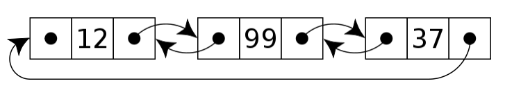

Computer science in JavaScript: Circular Doubly-linked lists
Expanding on a doubly linked list by adding circular traversal.
In my previous post, I discussed what changes are necessary to turn a singly linked list into a doubly linked list. I recommend reading that post before this one (if you haven’t already). This post is about modifying a doubly linked list (also called a linear doubly linked list) in such a way that the last node in the list points to the first node in the list, effectively making the list circular. Circular doubly linked lists are interesting because they allow you to continuously move through list items without needing to check for the end of the list. You may encounter this when creating playlists or round-robin distribution of traffic to servers.
The design of a circular doubly linked list
The nodes in a circular doubly linked list are no different than the nodes for a linear doubly linked list. Each node contains data and pointers to the next and previous items in the list. Here is what that looks like in JavaScript:
class CircularDoublyLinkedListNode {
constructor(data) {
this.data = data;
this.next = null;
this.previous = null;
}
}
You can then create a circular doubly linked list using the CircularDoublyLinkedListNode class like this:
// create the first node
const head = new CircularDoublyLinkedListNode(12);
// add a second node
const secondNode = new CircularDoublyLinkedListNode(99);
head.next = secondNode;
secondNode.previous = head;
// add a third node
const thirdNode = new CircularDoublyLinkedListNode(37);
secondNode.next = thirdNode;
thirdNode.previous = secondNode;
// point the last node to the first
thirdNode.next = head;
head.previous = thirdNode;
The head of the list and subsequent nodes in the list are created the same way as in a linear doubly linked list. The only difference is the last step where the last node’s next pointer is set to head and the head node’s previous pointer is set to the last node. The following image shows the resulting data structure.

Traversing a circular doubly linked list is a bit different than a linear doubly linked list because following next pointers alone will result in an infinite loop. For example, this is an infinite loop:
let current = head;
// infinite loop: `current` is never `null`
while (current !== null) {
console.log(current.data);
current = current.next;
}
In some cases you will want to continue iterating over the loop forever, but that typically does not happen in the context of a loop as in this code. In other cases, you’ll want to iterate over each node in the loop until the last node is found. To do that, you’ll need to check to see when current is head, which means you’re back at the beginning of the loop. However, simply swapping null for head in the previous example results in the loop not executing at all:
let current = head;
// loop is skipped: `current` is already `head`
while (current !== head) {
console.log(current.data);
current = current.next;
}
The problem here is that current started out equal to head and the loop only proceeds when current is not equal to head. The solution is to use a post-test loop instead of a pre-test loop, and in JavaScript, that means using a do-while loop:
let current = head;
if (current !== null) {
do {
console.log(current.data);
current = current.next;
} while (current !== head);
}
In this code, the check to see if current is equal to head appears at the end of the loop rather than at the start. To ensure that the loop won’t start unless current isn’t null, an if statement typically must preceed the do-while loop (you no longer have the pre-test of a while loop to cover that case for you). The loop will proceed until current is once again head, meaning that the entire list has been traversed.
Also similar to linear doubly linked lists, you can traverse the nodes in reverse order by starting from the last node. Circular doubly linked lists don’t separately track the list tail because you can always access the tail through head.previous, for example:
let current = head.previous;
if (current !== null) {
do {
console.log(current.data);
current = current.previous;
} while (current !== head.previous);
}
The CircularDoublyLinkedList class
The CircularDoublyLinkedList class starts out looking a lot like the DoublyLinkedList class from the previous article with the exception that there is no tail property to track the last node in the list:
const head = Symbol("head");
class CircularDoublyLinkedList {
constructor() {
this[head] = null;
}
}
The primary differences between a linear and circular doubly linked list have to do with the methods for adding, removing, and traversing the nodes.
Adding new data to the list
The same basic algorithm for adding data is used for both linear and circular doubly linked lists, with the difference being the pointers that must be updated to complete the process. Here is the add() method for the CircularDoublyLinkedList class:
class CircularDoublyLinkedList {
constructor() {
this[head] = null;
}
add(data) {
const newNode = new CircularDoublyLinkedListNode(data);
// special case: no items in the list yet
if (this[head] === null) {
this[head] = newNode;
newNode.next = newNode;
newNode.previous = newNode;
} else {
const tail = this[head].previous;
tail.next = newNode;
newNode.previous = tail;
newNode.next = this[head];
this[head].previous = newNode;
}
}
}
The add() method for the circular doubly linked list accepts one argument, the data to insert into the list. If the list is empty (this[head] is null) then the new node is assigned to this[head]. The extra step to make the list circular is to ensure that both newNode.next and newNode.previous point to newNode.
If the list is not empty, then a new node is added after the current tail, which is retrieved using this[head].previous. The new node can then be added to tail.next. Remember, you are actually inserting a new node between the tail and the head of the list, so this operation looks a lot more like an insert than an append. Once complete, newNode is the list tail and therefore newNode.next must point to this[head] and this[head].previous must point to newNode.
As with a linear doubly linked list, the complexity of this add() method is O(1) because no traversal is necessary.
Retrieving data from the list
The get() method for a circular doubly linked list follows the basic algorithm from the start of this post. You must traverse the list while keeping track of how deep into the list you have gone and ensuring you don’t loop back around to the front of the list. Here is how the get() method is implemented.
class CircularDoublyLinkedList {
// other methods hidden for clarity
get(index) {
// ensure `index` is a positive value and the list isn't empty
if ((index > -1) && (this[head] !== null)) {
let current = this[head];
let i = 0;
do {
if (i === index) {
return current.data;
}
current = current.next;
i++;
} while ((current !== this[head]) && (i <= index));
}
return undefined;
}
}
The get() method first checks to make sure that index is a positive value and that the list isn’t empty. If either case is true, then the method returns undefined. Remember, you must always use an if statement to check if a circular doubly linked list is empty before starting a traversal due to the use of a post-test instead of a pre-test loop.
Using the same traversal algorithm as discussed earlier, the get() method uses the i variable to track how deep into the list it has traversed. When i is equal to index, the data in that node is returned (existing the loop early). If the loop exits, either because it has reached the head of the list again or index is not found in the list, then undefined is returned.
As with a linear doubly linked list, the get() method’s complexity ranges from O(1) to O(n);
Removing data from the list
Removing data from a circular doubly linked list is basically the same as with a linear doubly linked list. The differences are:
- Using a post-test loop instead of a pre-test loop for the traversal (same as
get()) - Ensuring that the circular links remain on the head and tail nodes when either is removed
Here is what the implementation of a remove() method looks like:
class CircularDoublyLinkedList {
// other methods hidden for clarity
remove(index) {
// special cases: no nodes in the list or `index` is an invalid value
if ((this[head] === null) || (index < 0)) {
throw new RangeError(`Index ${index} does not exist in the list.`);
}
// save the current head for easier access
let current = this[head];
// special case: removing the first node
if (index === 0) {
// if there's only one node, null out `this[head]`
if (current.next === this[head]) {
this[head] = null;
} else {
// get the last item in the list
const tail = this[head].previous;
/*
* Set the tail to point to the second item in the list.
* Then make sure that item also points back to the tail.
*/
tail.next = current.next;
current.next.previous = tail;
// now it's safe to update the head
this[head] = tail.next;
}
// return the data at the previous head of the list
return current.data;
}
let i = 0;
do {
// traverse to the next node
current = current.next;
// increment the count
i++;
} while ((current !== this[head]) && (i < index));
// the node to remove has been found
if (current !== this[head]) {
// skip over the node to remove
current.previous.next = current.next;
current.next.previous = current.previous;
// return the value that was just removed from the list
return current.data;
}
// `index` doesn't exist in the list so throw an error
throw new RangeError(`Index ${index} does not exist in the list.`);
}
}
While there are special cases in this remove() method, almost every case requires adjusting pointers on two nodes due to the circular nature of the list. The only case where this isn’t necessary is when you are removing the only node in the list.
Removing the first node in the list (index is 0) is treated as a special case because there is no need for traversal and this[head] must be assigned a new value. The second node in the list becomes the head and it previous pointer must be adjusted accordingly.
The rest of the method follows the same algorithm as for a linear doubly linked list. As we don’t need to worry about the special this[head] pointer, the search for and removal of the node at index can proceed as if the list was linear.
Creating iterators
There are two distinct use cases for iterators in a circular linked list:
- For use with JavaScript’s builtin iteration functionality (like
for-ofloops) - For moving through the values of the list in a circular fashion for specific applications (like a playlist)
To address the first case, it makes sense to create a values() generator method and a Symbol.iterator method on the class as these are expected on JavaScript collections. These methods are similar to those in a doubly linked list with the usual exceptions that the loop must be flipped and the you need to check to see if you’ve reached the list head to exit the loop. Those two methods look like this:
class CircularLinkedList {
// other methods hidden for clarity
values() {
// special case: list is empty
if (this[head] !== null) {
// special case: only one node
if (this[head].next === this[head]) {
yield this[head].data;
} else {
let current = this[head];
do {
yield current.data;
current = current.next;
} while (current !== this[head]);
}
}
}
[Symbol.iterator]() {
return this.values();
}
}
The values() generator method has two special cases: when the list is empty, in which case it doesn’t yield anything, and when there is only one node, in which case traversal isn’t necessary and the data stored in the head is yielded. Otherwise, the do-while loop is the same as the one you’ve seen through this post.
Creating an iterator that loops around is then just a matter of modifying this algorithm so the loop never exits. Here is what that looks like:
class CircularDoublyLinkedList {
// other methods hidden for clarity
*circularValues() {
// special case: list is empty
if (this[head] !== null) {
let current = this[head];
// infinite loop
do {
yield current.data;
current = current.next;
} while (true);
}
}
}
You wouldn’t want to use the circularValues() generator method in any situation where JavaScript will drain an iterator (as in the for-of loop) because this will cause an infinite loop and crash. Instead, manually call the next() method of the iterator whenever you need another value.
Using the class
Once complete, you can use the circular doubly linked list implementation like this:
const list = new CircularDoublyLinkedList();
list.add("red");
list.add("orange");
list.add("yellow");
// get the second item in the list
console.log(list.get(1)); // "orange"
// print out all items
for (const color of list.values()) {
console.log(color);
}
// remove the second item in the list
console.log(list.remove(1)); // "orange"
// get the new first item in the list
console.log(list.get(1)); // "yellow"
// convert to an array
const array1 = [...list.values()];
const array2 = [...list];
// manually cycle through each item in a circular manner
const iterator = list.circularValues();
let { value } = iterator.next();
doSomething(value);
({ value } = iterator.next());
doSomething(value);
The full source code is available on GitHub at my Computer Science in JavaScript project.
Conclusion
Circular doubly linked lists are setup in a similar manner as linear doubly linked lists in that each ndoe has a pointer to both the next and previous nodes in the list. The difference is that the list tail always points to the list head so you can follow next pointers and never receive null. This functionality can be used for applications such as playlists or round-robin distribution of data processing.
The implementation of doubly linked list operations differs from linear doubly linked lists in that you must use a post-test loop (do-while) to check if you’re back at the beginning of the list. For most operations, it’s important to stop when the list head has been reached again. The only exception is in creating an iterator to be called manually and which you’d prefer never ran out of items to return.
The complexity of circular doubly linked list operations is the same as with linear doubly linked list operations. Unlike the other data structures discussed in this blog post series, circular doubly linked lists can be helpful in JavaScript applications that require repeating cycling through the same data. That is one use case that isn’t covered well by JavaScript’s builtin collection types.